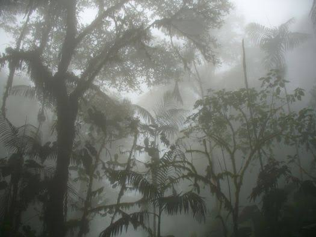
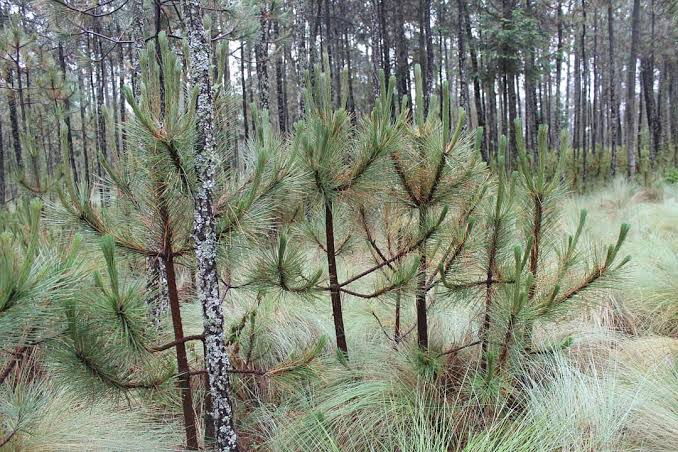
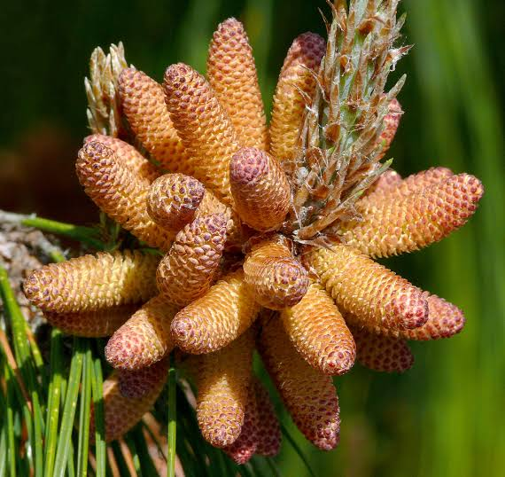
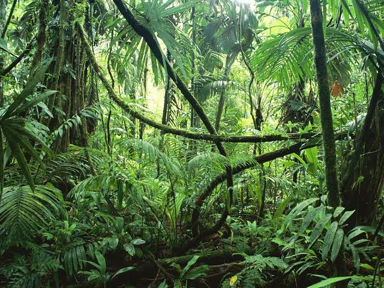
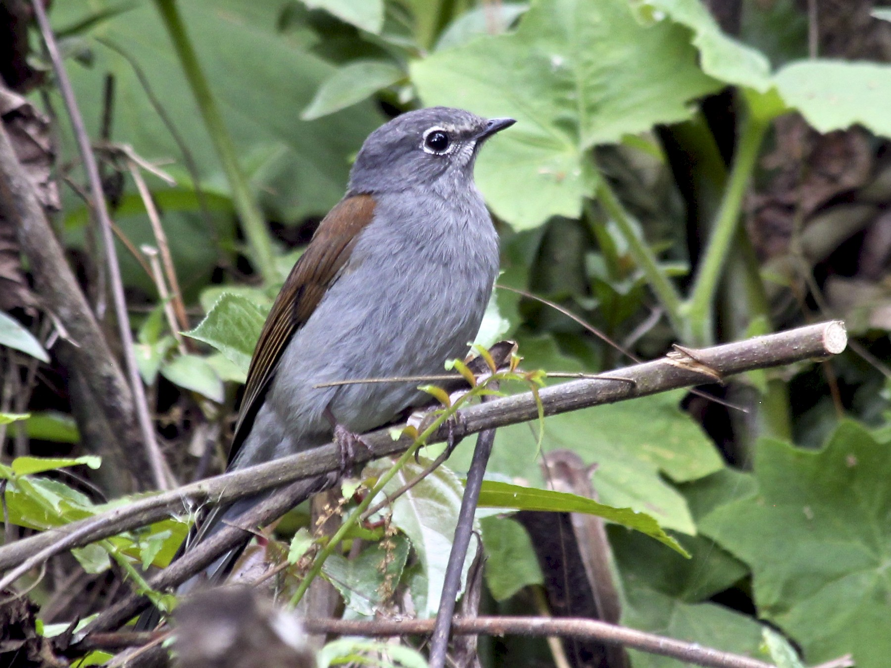
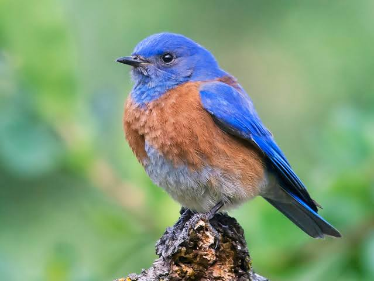
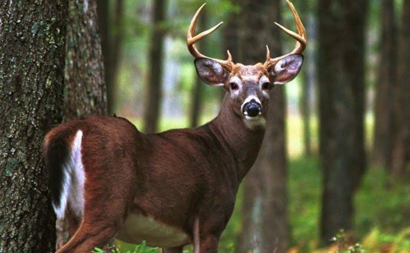

Bosque de Niebla: Reserva de la Biosfera "El Triunfo"
Localizada en la parte central de la Sierra Madre de Chiapas, esta reserva cuenta con una superficie superior a 119,000 hectáreas, comprendiendo parte de las regiones económicas Frailesca, Sierra, Istmo, Costa y Soconusco. Como Área Natural Protegida, en ella se conservan el poco común Bosque Mesófilo de Montaña (Selva de Niebla). En su amplia extensión, la Reserva de la Biosfera El Triunfo tiene 10 tipos y subtipos de vegetación, donde predominan las relacionadas a la Selva de Niebla, convirtiéndola en una de las zonas más húmedas del país. Aquí el clima varía entre los cálidos y los templados-húmedos, presentando una temperatura media anual de 22 °C. Además, es uno de los santuarios de aves más importantes de México y el mayor captador de agua dulce de la región. El bosque de niebla de esta zona es considerado el más diverso del Norte y Centroamérica. Debido a su riqueza natural, desgraciadamente, es uno de los ecosistemas más amenazados del mundo.

Clima
Se desarrollan en zonas con temperaturas promedio entre 12 y 23°C, aunque en invierno la temperatura puede llegar hasta por debajo de cero grados. Son ecosistemas de subhúmedos a templado húmedos, con una precipitación anual entre 600 y 1,000 ms. Crecen sobre suelos muy variados desde limosos a arenosos y moderadamente ácidos, por lo general con abundante materia orgánica y hojarasca.
Flora
Se distribuye en las montañas de las Sierras Madre Oriental y Occidental y en Centroamérica hasta Honduras. Puede crecer por arriba de los 4 000 m y frecuentemente es la especie de pino que ocupa la parte más alta de las montañas. Se utiliza como madera y como leña. Es un árbol siempreverde que alcanza una altura de 31 m, con una corona amplia y redondeada. El tronco tiene un diámetro de hasta 128 cm. Su gruesa y rugosa corteza es de color marrón a grisáceo y se divide en placas escamosas. Las hojas son de color verde oscuro y se encuentran en fascículos de entre 3 y 6 acículas. 3 Los conos son ovoides, negros o de un purpura muy oscuro; se abren cuando maduran en primavera. La polinización ocurre al final de la primavera y los conos maduran entre 20 y 22 meses después.

Tronco recto que puede alcanzar alturas de 20 hasta 40 m y diámetros que van desde los 40 a los 150 cm. Sus hojas se encuentran en grupos de 3 hasta 5-raramente- y sus flores, bastante vistosas, son de color amarillo claro o naranja. Sus frutos son conos puntiagudos y encorvados que pueden medir desde 7 hasta 9 cm y se encuentran agrupados en grupos.

Por lo general los robles son arboles de tronco grueso y altura superior a los veinte metros. Disponen de ramas de gran tamaño con hojas perennes y frutos de sabor amargo. La principal característica del roble es la dureza de su madera.

Mas Flora
Los bosques templados son comunidades con un estrato bajo muy escaso. En algunos sitios se desarrollan pequeños manchones de matorrales compuestos por manzanita (Acrtostaphylos pungens), Arrayán (Gaultheria acuminata), Palo de rosa (Bejaria aestuans), Jara (Baccharis heterophylla), Tlaxistle (Amelanchier denticulata), Laurel (Litsea glaucescens), Lentrisco (Rhus virens), Cabellos de ángel (Calliandra grandiflora), Capulincillo (Miconia hemenostigma), Nanchillo cimarrón (Vismia camparaguey), y varias hierbas como Hierba de Carranza (Alchemilla pectinata), Najicoli (Lamourouxia viscosa), Alfalfilla (Lupinus montanus), Hierba dulce (Stevia lucida), Helechos (Dryopteris spp.), Cantaritos (Penstemon spp.), Hierba del sapo (Eryngium sp.) y otras. También Abrojo (Acaena elongata), Té de monte (Satureja macrostema), Helecho cilantro (Asplenium monanthes), Hierba del golpe (Oenothera speciosa) habitan en el sotobosque.Las epifitas no son comunes pero algunas bromelias y orquídeas crecen en pinos o encinos sobre todo en sitios muy húmedos. Puede haber cientos de especies de hongos entre ellas el Hongo de borrego (Russula brevipes), Hongo de yema (Amanita caesarea), Matamoscas (Amanita muscaria), Hongo cemita (Boletus edulis) y Duraznillo (Cantharellus cibarius).
Fauna
En fauna, podemos encontrar: Venado cola blanca, Lince, Puma, Armadillo, Tlacuache, Zorra gris, Mapache, Conejo serrano, Ardilla voladora (Glaucomys volans), Ardilla gris (Sciurus aureogaster) y Coatí norteño (Nasua narica). Las Serpientes de cascabel (Crotalus basiliscus), Víbora cascabel cola negra (Crotalus molossus), Vibora cascabel transvolcánica (Crotalus triseriatus) se alimentan de pequeños mamíferos que abundan en estos bosques. Son el hábitat preferido del Clarín jilguero (Myadestes occidentalis) y el Azulejo garganta azul (Sialia mexicana), además de pájaros carpinteros como Carpintero mayor (Picoides villosus) y Carpintero bellotero (Melanerpes formicivorus) y de algunas rapaces como águila real (Aquila chrysaetos), Aguililla cola roja (Buteo jamaicensis), Cernícalo americano (Falco sparverius), Gavilán pecho rojo (Accipiter striatus). También es refugio de numerosas aves migratorias como los chipes (Setophaga spp.), el Zumbador rojo (Selasphorus rufus) y el Colibrí garganta rubí (Archilochus colubris). En bosques templados también habitan de gran variedad de insectos.
| CLARIN JILGUERO | AZULEJO GARGANTA AZUL |
|  |  |
| VENADO COLA BLANCA |
|  |